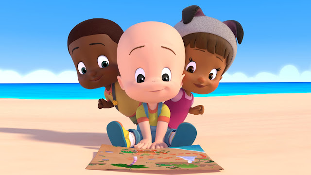

Prepare-se para aprender, cantar e brincar com os números ao lado do querido Cuquim!
Clique nas frases para ouvi-las e aperte "Avançar" para iniciar!
Olha só, Emerson! O Cuquim e seus grandes amigos encontraram um maravilhoso mapa na praia!
Para descobrir onde está o baú mágico, precisamos resolver divertidos enigmas da matemática. Vamos ajudá-los?

Ajude o Cuquim a encontrar o número que falta na soma para abrir o portal:
Qual número completa a nossa pirâmide mágica?
Quem vem primeiro para somar e ganhar mais uma estrela?
Se juntarmos três lindos bloquinhos mais três, quantos temos ao todo?
O Cuquim colheu 8 deliciosas maçãs. Ele comeu 3 maçãs no lanche da tarde. Quantas maçãs sobraram?
O coelhinho pula de dois em dois números: 2, depois pula para o 4, depois 6... Qual número ele vai pisar agora?
Para construir uma linda casinha de blocos, quantos lados tem um Triângulo? Escolha a resposta certa abaixo:
Você concluiu todos os desafios matemáticos! O Cuquim e seus amigos estão super orgulhosos do seu esforço!
Você montou as formas, descobriu todos os números secretos e abriu o baú do saber!